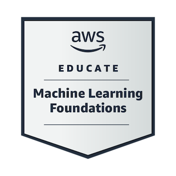
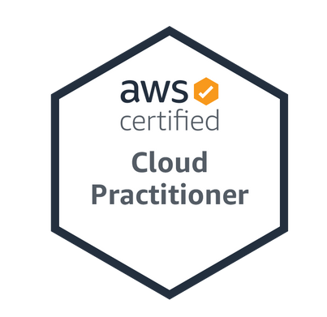
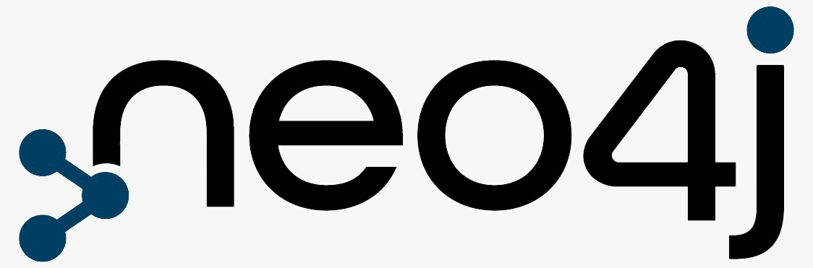

Certifications & Fellowships
AWS Certified Solutions Architect - Associate
Completed on: February 2025
Provider: Amazon Web Services

AWS Educate Machine Learning Engineer
Completed on: October 2024
Provider: Amazon Web Services
AWS Certified Cloud Practitioner
Completed on: September 2024
Provider: Amazon Web Services
Oracle Cloud Infrastructure Generative AI Professional
Completed on: July 2024
Provider: Oracle
Certified Neo4j Practitioner
Completed on: October 2024
Provider: Neo4j Academy
Headstarter SWE Fellowship '24
Completed on: August 2024
Provider: Headstarter AI

GSoC '16 Summer Intern
Completed on: July 2016
Provider: Google Inc